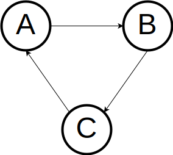

What are ARC and ORC in Nim?
14 October 2020 Danil Yarantsev (Yardanico)
Intro
Let’s start a bit far - Nim has traditionally been garbage collected (GC) language. Most of the standard library relies on the GC to work. Of course, you can disable the GC and do manual memory management, but then you lose access to most of the stdlib (which is quite big by the way).
The default GC in Nim has been refc (deferred reference counting with a mark & sweep phase for cycle collection)
for a long time, with other options available, such as markAndSweep, boehm, go.
But over the last few years there were new ideas about destructors, owned refs (newruntime), and other similar stuff for Nim:
A lot of these different ideas have emerged into ARC.
What is ARC?
At its core ARC is a memory management model based on Automatic Reference Counting (some people mistake Nim’s ARC for Swift’s ARC; however they have one big difference - ARC in Nim doesn’t use atomic RC like in Swift) with destructors and move semantics.
Reference counting is one of the most popular algorithms for freeing unused resources of the program. Reference count for any managed (controlled by the runtime) reference is how many times that reference is used in other places. When that count becomes zero -> the reference and all of its underlying data is destroyed.
The main difference of ARC compared to Nim GCs is that ARC is fully deterministic -
the compiler automatically injects destructors when it deems that some variable
(a string, sequence, reference, or something else) is no longer needed.
In this sense, it’s similar to C++ with its destructors (RAII).
To show what I mean we can use Nim’s expandArc introspection (will be available in Nim 1.4).
Let’s have some simple code:
proc main =
let mystr = stdin.readLine()
case mystr
of "hello":
echo "Nice to meet you too!"
of "bye":
echo "Goodbye!"
quit()
else:
discard
main()
And then use Nim’s ARC IR on the main procedure by running nim c --gc:arc --expandArc:main example.nim
var mystr
try:
mystr = readLine(stdin)
case mystr
of "hello":
echo ["Nice to meet you too!"]
of "bye":
echo ["Goodbye!"]
quit(0)
else:
discard
finally:
`=destroy`(mystr)
What we see here is really interesting - Nim compiler has wrapped the body
of the main proc in a try: finally (code in finally runs even when an exception
is raised in the try block) statement and inserted a =destroy call to our mystr
(which is initialised at runtime) so that it’s destroyed when it is no longer needed (when its’ lifetime ends).
This shows one of the main ARC features - scope-based memory management.
A scope is a separate region of code in the program.
Scope-based MM means that the compiler will automatically insert destructor calls
for any variables which need a destructor after the scope ends.
A lot of Nim constructs introduce new scopes: procs, funcs, converters,
methods, block statements and expressions, for or while loops, etc.
ARC also has so-called hooks - special procedures that can be defined for types to override the default compiler behaviour when destroying/moving/copying the variable. Those are particularly useful when you want to make custom semantics for your types, deal with low-level operations involving pointers, or do FFI.
The main advantages of ARC compared to Nim’s current refc GC are
(including the ones I talked about above):
-
Scope-based memory management (destructors are injected after the scope) - generally reduces RAM usage of the programs and improves performance
-
Move semantics - the ability for the compiler to statically analyse the program and convert memory copies into moves where it is possible.
-
Shared heap (different threads have access to the same memory and you don’t need to copy variables to pass them between threads - you can instead move them; also see an RFC about isolating and sending data between threads)
-
Easier FFI (
refcrequires each foreign thread to set up the GC manually which is not the case with ARC). This also means that ARC is a much better choice for creating Nim libraries to be used from other languages (.dll, .so, Python extensions, etc) -
Suitable for hard realtime programming
-
Copy elision (cursor inference) reduces copies to simple cursors (aliases) in a lot of cases.
Generally, ARC is an amazing step for programs to become faster, use less memory, and have predictable behaviour.
To enable ARC for your program, all you have to do is compile with
the --gc:arc switch, or add it to your project’s config file (.nims or .cfg).
Problem with cycles
But wait! Haven’t we forgotten something? ARC is reference counting, and as we all know, RC doesn’t deal with cycles by itself. In short, a cycle is when some variables depend on each other in a way that can resemble a cycle. Let’s make a simple example: we have 3 objects (A, B, C), and each of them references the other, better shown with a diagram:

To find and collect that cycle we need to have a cycle collector - special part of the runtime which finds and removes cycles that are no longer needed in the program.
In Nim cycle collection has been done by the mark & sweep phase of the refc GC,
but it’s better to use ARC as the foundation to make something better, so please welcome:
ORC - Nim’s cycle collector
ORC is an all-new Nim’s cycle collector based on ARC.
It can be considered a full-blown GC since it includes a local tracing phase
(contrary to most other tracing GCs which do global tracing).
I don’t have much to say about ORC, but it retains most of ARC’s advantages
except determinism (partially) - by default ORC has an adaptive threshold
for collecting cycles, and hard realtime (partially), for the same reason.
To enable ORC you would need to compile your program with --gc:orc,
but ORC will probably become Nim’s default GC in the future.
I’m excited! How do I test them out?
ARC is available in Nim 1.2.x releases but it has a lot of bugs in that version. It’s better to wait for the Nim 1.4 release (it should be out soon) which will have ARC and ORC available for wide testing. But if you’re so eager to try them out, you can try a 1.4 release candidate
That’s all! Thank you for reading the article - I hope you enjoyed it and will enjoy the amazing possibilities that ARC/ORC bring to Nim :)
Sources / further information:
- Introducing –gc:arc
- Update on –gc:arc
- New garbage collector –gc:orc is a joy to use.
- Nim destructors and move semantics
- FOSDEM 2020 - Move semantics for Nim
- NimConf 2020 - Nim ARC/ORC
- Other discussions on the Nim forum
- Nim real-time chat
- Nim GitHub repository issues/pull requests